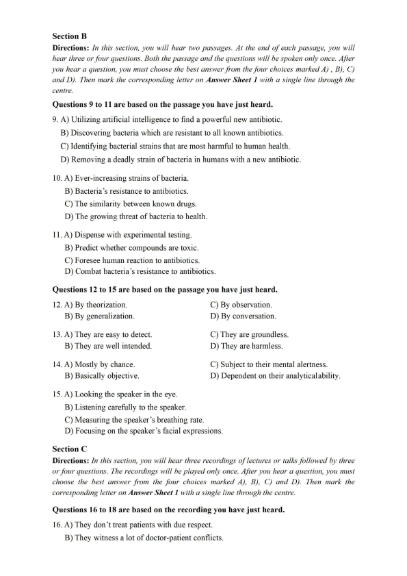
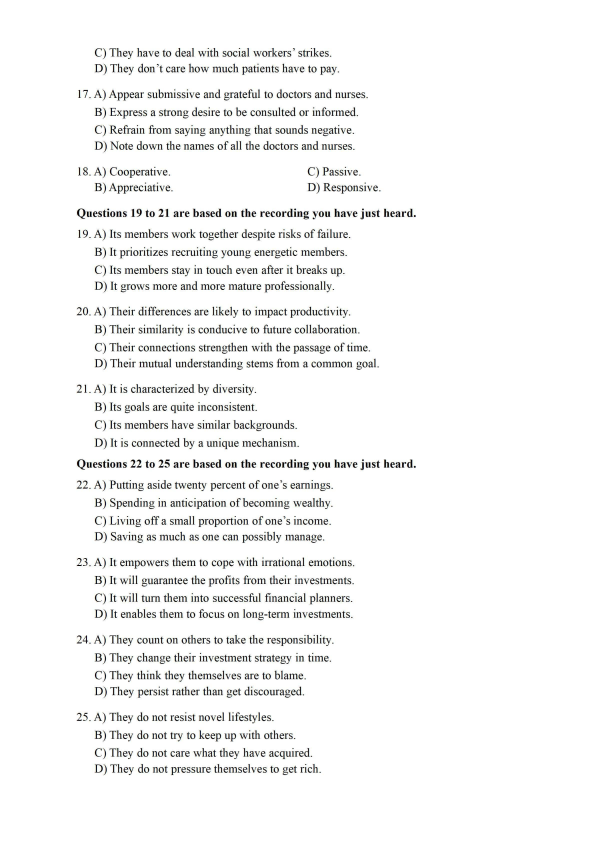
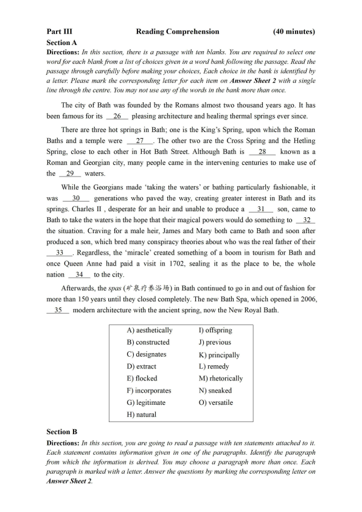
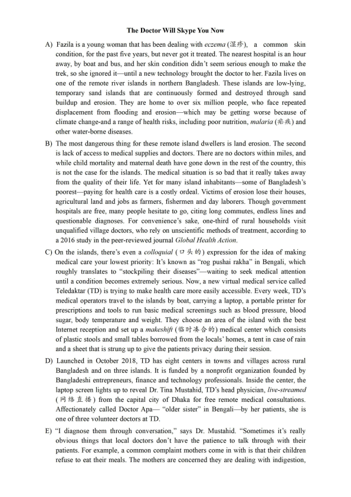
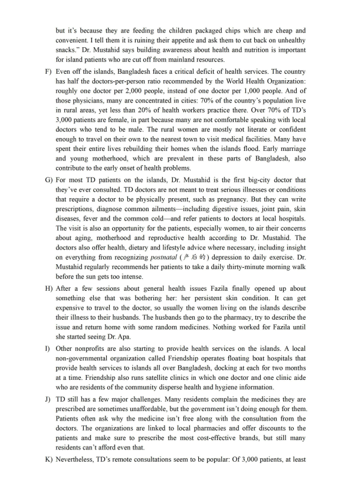
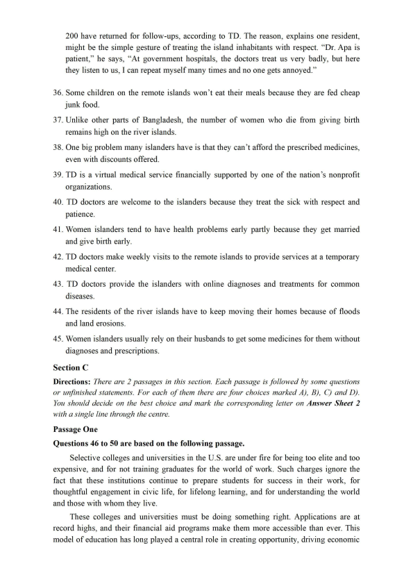
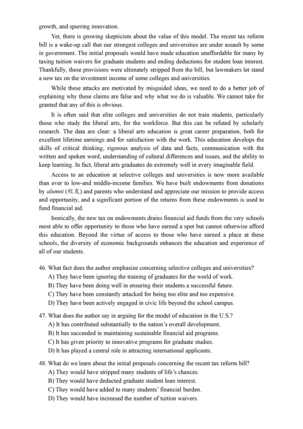
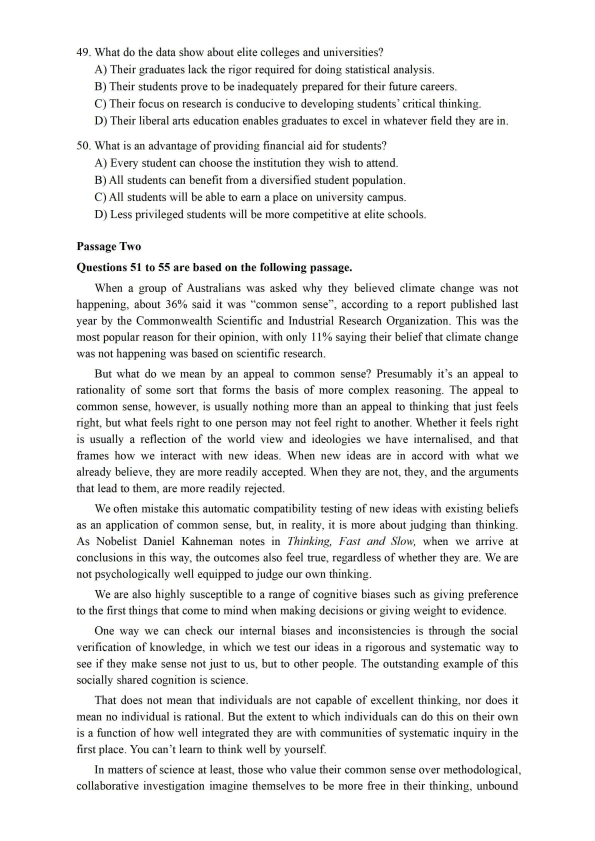
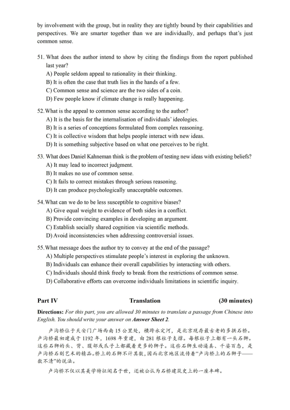

第 1 / 10 页

2022年06 月大学英语六级考试真题（第1 套）
Part I
Writing
(30minutes)
Directions: For this part, you are allowed 30 minutes to write an essay that begins with the
sentence “Nowadays more and more people choose to live an environmentally friendly
lifestyle.99 You can make comments, cite examples, or use your personal experiences to develop
your essay. You should write at least 150 words but no more than 200 words.
Part II
Section A
Listening Comprehension
(30 minutes)
Directions: In this section, you will hear two long conversations. At the end o f each
conversation, you will hear four questions. Both the conversation and the questions will be
spoken only once. After you hear a question, you must choose the best answer from the four
choices marked A), B), C) and D). Then mark the corresponding letter on Answer Sheet 1 with
a single line through the centre.
Questions 1 to 4 are based on the conversation you have just heard.
1. A) He is a staff writer.
B) He is an adventurer.
C) He is an author of fiction.
D) He is a father of four kids.
2. A) They are interested in fairy tales.
B) They are curious and autonomous.
C) They are a headache to their parents.
D) They are ignorant of politics.
3. A) He offers them ample editorial guidance.
B) He recommends model essays to them.
C) He gives them encouragement.
D) He teaches them proofreading.
4. A) Her tastes in books changed.
B) She realized the power of reading.
C) Her reading opened her eyes to the world.
D) She began to perceive the world differently.
Questions 5 to 8 are based on the conversation you have just heard.
5. A) She is a website designer.
B) She is a university graduate.
6. A) They were repeatedly rejected by shops.
B) They were popular with her classmates.
7. A) She had a strong interest in doing it.
B) She did not like ready-made clothes.
C) She could not find clothes of her size.
D) She found clothes in shops unaffordable.
8. A) Study fashion design at college.
B) Improve her marketing strategy.
C) She is a main street store owner.
D) She is a successful entrepreneur.
C) They showed her natural talent.
D) They were mostly failures.
C) Add designs for women.
D) Expand her business.
查看 / 复制本页文字
2022年06 月大学英语六级考试真题（第1 套） Part I Writing (30minutes) Directions: For this part, you are allowed 30 minutes to write an essay that begins with the sentence “Nowadays more and more people choose to live an environmentally friendly lifestyle.99 You can make comments, cite examples, or use your personal experiences to develop your essay. You should write at least 150 words but no more than 200 words. Part II Section A Listening Comprehension (30 minutes) Directions: In this section, you will hear two long conversations. At the end o f each conversation, you will hear four questions. Both the conversation and the questions will be spoken only once. After you hear a question, you must choose the best answer from the four choices marked A), B), C) and D). Then mark the corresponding letter on Answer Sheet 1 with a single line through the centre. Questions 1 to 4 are based on the conversation you have just heard. 1. A) He is a staff writer. B) He is an adventurer. C) He is an author of fiction. D) He is a father of four kids. 2. A) They are interested in fairy tales. B) They are curious and autonomous. C) They are a headache to their parents. D) They are ignorant of politics. 3. A) He offers them ample editorial guidance. B) He recommends model essays to them. C) He gives them encouragement. D) He teaches them proofreading. 4. A) Her tastes in books changed. B) She realized the power of reading. C) Her reading opened her eyes to the world. D) She began to perceive the world differently. Questions 5 to 8 are based on the conversation you have just heard. 5. A) She is a website designer. B) She is a university graduate. 6. A) They were repeatedly rejected by shops. B) They were popular with her classmates. 7. A) She had a strong interest in doing it. B) She did not like ready-made clothes. C) She could not find clothes of her size. D) She found clothes in shops unaffordable. 8. A) Study fashion design at college. B) Improve her marketing strategy. C) She is a main street store owner. D) She is a successful entrepreneur. C) They showed her natural talent. D) They were mostly failures. C) Add designs for women. D) Expand her business.
第 2 / 10 页

Section B
Directions: In this section, you will hear two passages. At the end of each passage, you will
hear three or four questions. Both the passage and the questions will be spoken only once. After
you hear a question, you must choose the best answer from the four choices marked A) , B), C)
and D). Then mark the corresponding letter on Answer Sheet 1 with a single line through the
centre.
Questions 9 to 11 are based on the passage you have just heard.
9. A) Utilizing artificial intelligence to find a powerful new antibiotic.
B) Discovering bacteria which are resistant to all known antibiotics.
C) Identifying bacterial strains that are most harmful to human health.
D) Removing a deadly strain of bacteria in humans with a new antibiotic.
10. A) Ever-increasing strains of bacteria.
B) Bacteria's resistance to antibiotics.
C) The similarity between known drugs.
D) The growing threat of bacteria to health.
11. A) Dispense with experimental testing.
B) Predict whether compounds are toxic.
C) Foresee human reaction to antibiotics.
D) Combat bacteria's resistance to antibiotics.
Questions 12 to 15 are based on the passage you have just heard.
12. A) By theorization.
B) By generalization.
13. A) They are easy to detect.
B) They are well intended.
14. A) Mostly by chance.
B) Basically objective.
C) By observation.
D) By conversation.
C) They are groundless.
D) They are harmless.
C) Subject to their mental alertness.
D) Dependent on their analytical ability.
15. A) Looking the speaker in the eye.
B) Listening carefully to the speaker.
C) Measuring the speaker's breathing rate.
D) Focusing on the speaker's facial expressions.
Section C
Directions: In this section, you will hear three recordings of lectures or talks followed by three
or four questions. The recordings will be played only once. After you hear a question, you must
choose the best answer from the four choices marked A), B), C) and D). Then mark the
corresponding letter on Answer Sheet 1 with a single line through the centre.
Questions 16 to 18 are based on the recording you have just heard.
16. A) They don't treat patients with due respect.
B) They witness a lot of doctor-patient conflicts.
查看 / 复制本页文字
Section B Directions: In this section, you will hear two passages. At the end of each passage, you will hear three or four questions. Both the passage and the questions will be spoken only once. After you hear a question, you must choose the best answer from the four choices marked A) , B), C) and D). Then mark the corresponding letter on Answer Sheet 1 with a single line through the centre. Questions 9 to 11 are based on the passage you have just heard. 9. A) Utilizing artificial intelligence to find a powerful new antibiotic. B) Discovering bacteria which are resistant to all known antibiotics. C) Identifying bacterial strains that are most harmful to human health. D) Removing a deadly strain of bacteria in humans with a new antibiotic. 10. A) Ever-increasing strains of bacteria. B) Bacteria's resistance to antibiotics. C) The similarity between known drugs. D) The growing threat of bacteria to health. 11. A) Dispense with experimental testing. B) Predict whether compounds are toxic. C) Foresee human reaction to antibiotics. D) Combat bacteria's resistance to antibiotics. Questions 12 to 15 are based on the passage you have just heard. 12. A) By theorization. B) By generalization. 13. A) They are easy to detect. B) They are well intended. 14. A) Mostly by chance. B) Basically objective. C) By observation. D) By conversation. C) They are groundless. D) They are harmless. C) Subject to their mental alertness. D) Dependent on their analytical ability. 15. A) Looking the speaker in the eye. B) Listening carefully to the speaker. C) Measuring the speaker's breathing rate. D) Focusing on the speaker's facial expressions. Section C Directions: In this section, you will hear three recordings of lectures or talks followed by three or four questions. The recordings will be played only once. After you hear a question, you must choose the best answer from the four choices marked A), B), C) and D). Then mark the corresponding letter on Answer Sheet 1 with a single line through the centre. Questions 16 to 18 are based on the recording you have just heard. 16. A) They don't treat patients with due respect. B) They witness a lot of doctor-patient conflicts.
第 3 / 10 页

C) They have to deal with social workers9 strikes.
D) They don't care how much patients have to pay.
17. A) Appear submissive and grateful to doctors and nurses.
B) Express a strong desire to be consulted or informed.
C) Refrain from saying anything that sounds negative.
D) Note down the names of all the doctors and nurses.
18. A) Cooperative.
C) Passive.
B) Appreciative.
D) Responsive.
Questions 19 to 21 are based on the recording you have just heard.
19. A) Its members work together despite risks of failure.
B) It prioritizes recruiting young energetic members.
C) Its members stay in touch even after it breaks up.
D) It grows more and more mature professionally.
20. A) Their differences are likely to impact productivity.
B) Their similarity is conducive to future collaboration.
C) Their connections strengthen with the passage of time.
D) Their mutual understanding stems from a common goal.
21. A) It is characterized by diversity.
B) Its goals are quite inconsistent.
C) Its members have similar backgrounds.
D) It is connected by a unique mechanism.
Questions 22 to 25 are based on the recording you have just heard.
22. A) Putting aside twenty percent of one's earnings.
B) Spending in anticipation of becoming wealthy.
C) Living off a small proportion of one's income.
D) Saving as much as one can possibly manage.
23. A) It empowers them to cope with irrational emotions.
B) It will guarantee the profits from their investments.
C) It will turn them into successful financial planners.
D) It enables them to focus on long-term investments.
24. A) They count on others to take the responsibility.
B) They change their investment strategy in time.
C) They think they themselves are to blame.
D) They persist rather than get discouraged.
25. A) They do not resist novel lifestyles.
B) They do not try to keep up with others.
C) They do not care what they have acquired.
D) They do not pressure themselves to get rich.
查看 / 复制本页文字
C) They have to deal with social workers9 strikes. D) They don't care how much patients have to pay. 17. A) Appear submissive and grateful to doctors and nurses. B) Express a strong desire to be consulted or informed. C) Refrain from saying anything that sounds negative. D) Note down the names of all the doctors and nurses. 18. A) Cooperative. C) Passive. B) Appreciative. D) Responsive. Questions 19 to 21 are based on the recording you have just heard. 19. A) Its members work together despite risks of failure. B) It prioritizes recruiting young energetic members. C) Its members stay in touch even after it breaks up. D) It grows more and more mature professionally. 20. A) Their differences are likely to impact productivity. B) Their similarity is conducive to future collaboration. C) Their connections strengthen with the passage of time. D) Their mutual understanding stems from a common goal. 21. A) It is characterized by diversity. B) Its goals are quite inconsistent. C) Its members have similar backgrounds. D) It is connected by a unique mechanism. Questions 22 to 25 are based on the recording you have just heard. 22. A) Putting aside twenty percent of one's earnings. B) Spending in anticipation of becoming wealthy. C) Living off a small proportion of one's income. D) Saving as much as one can possibly manage. 23. A) It empowers them to cope with irrational emotions. B) It will guarantee the profits from their investments. C) It will turn them into successful financial planners. D) It enables them to focus on long-term investments. 24. A) They count on others to take the responsibility. B) They change their investment strategy in time. C) They think they themselves are to blame. D) They persist rather than get discouraged. 25. A) They do not resist novel lifestyles. B) They do not try to keep up with others. C) They do not care what they have acquired. D) They do not pressure themselves to get rich.
第 4 / 10 页

Part III
Reading Comprehension
(40 minutes)
Section A
Directions: In this section, there is a passage with ten blanks. You are required to select one
word for each blank from a list of choices given in a word bankf ollowing the passage. Read the
passage through carefully before making your choices, Each choice in the bank is identified by
a letter. Please mark the corresponding letter for each item on Answer Sheet 2 with a single
line through the centre. You may not use any of the words in the bank more than once.
The city of Bath was founded by the Romans almost two thousand years ago. It has
been famous for its
26
pleasing architecture and healing thermal springs ever since.
There are three hot springs in Bath; one is the King's Spring, upon which the Roman
Baths and a temple were
27
. The other two are the Cross Spring and the Hetling
Spring, close to each other in Hot Bath Street. Although Bath is
28
known as a
Roman and Georgian city, many people came in the intervening centuries to make use of
the
29
waters.
While the Georgians made "taking the waters' or bathing particularly fashionable, it
was
30
generations who paved the way, creating greater interest in Bath and its
springs. Charles II , desperate for an heir and unable to produce a
31
son, came to
Bath to take the waters in the hope that their magical powers would do something to
32
the situation. Craving for a male heir, James and Mary both came to Bath and soon after
produced a son, which bred many conspiracy theories about who was the real father of their
33
. Regardless, the "miracle9 created something of a boom in tourism for Bath and
once Queen Anne had paid a visit in 1702, sealing it as the place to be, the whole
nation
34
to the city.
Afterwards, the spas (矿泉疗 养浴场)in Bath continued to go in and out of fashion for
more than 150 years until they closed completely. The new Bath Spa, which opened in 2006,
35
modem architecture with the ancient spring, now the New Royal Bath.
A) aesthetically
I) offspring
B) constructed
J) previous
C) designates
K) principally
D) extract
L) remedy
E) flocked
M) rhetorically
F) incorporates
N) sneaked
G) legitimate
O) versatile
H) natural
Section B
Directions: In this section, you are going to read a passage with ten statements attached to it.
Each statement contains information given in one of the paragraphs. Identify the paragraph
from which the information is derived. You may choose a paragraph more than once. Each
paragraph is marked with a letter. Answer the questions by marking the corresponding letter on
Answer Sheet 2.
查看 / 复制本页文字
Part III Reading Comprehension (40 minutes) Section A Directions: In this section, there is a passage with ten blanks. You are required to select one word for each blank from a list of choices given in a word bankf ollowing the passage. Read the passage through carefully before making your choices, Each choice in the bank is identified by a letter. Please mark the corresponding letter for each item on Answer Sheet 2 with a single line through the centre. You may not use any of the words in the bank more than once. The city of Bath was founded by the Romans almost two thousand years ago. It has been famous for its 26 pleasing architecture and healing thermal springs ever since. There are three hot springs in Bath; one is the King's Spring, upon which the Roman Baths and a temple were 27 . The other two are the Cross Spring and the Hetling Spring, close to each other in Hot Bath Street. Although Bath is 28 known as a Roman and Georgian city, many people came in the intervening centuries to make use of the 29 waters. While the Georgians made "taking the waters' or bathing particularly fashionable, it was 30 generations who paved the way, creating greater interest in Bath and its springs. Charles II , desperate for an heir and unable to produce a 31 son, came to Bath to take the waters in the hope that their magical powers would do something to 32 the situation. Craving for a male heir, James and Mary both came to Bath and soon after produced a son, which bred many conspiracy theories about who was the real father of their 33 . Regardless, the "miracle9 created something of a boom in tourism for Bath and once Queen Anne had paid a visit in 1702, sealing it as the place to be, the whole nation 34 to the city. Afterwards, the spas (矿泉疗 养浴场)in Bath continued to go in and out of fashion for more than 150 years until they closed completely. The new Bath Spa, which opened in 2006, 35 modem architecture with the ancient spring, now the New Royal Bath. A) aesthetically I) offspring B) constructed J) previous C) designates K) principally D) extract L) remedy E) flocked M) rhetorically F) incorporates N) sneaked G) legitimate O) versatile H) natural Section B Directions: In this section, you are going to read a passage with ten statements attached to it. Each statement contains information given in one of the paragraphs. Identify the paragraph from which the information is derived. You may choose a paragraph more than once. Each paragraph is marked with a letter. Answer the questions by marking the corresponding letter on Answer Sheet 2.
第 5 / 10 页

The Doctor Will Skype You Now
A) Fazila is a young woman that has been dealing with eczema ( S ^ ) , a common skin
condition, for the past five years, but never got it treated. The nearest hospital is an hour
away, by boat and bus, and her skin condition didn't seem serious enough to make the
trek, so she ignored it- until a new technology brought the doctor to her. Fazila lives on
one of the remote river islands in northern Bangladesh. These islands are low-lying,
temporary sand islands that are continuously formed and destroyed through sand
buildup and erosion. They are home to over six million people, who face repeated
displacement from flooding and erosion- which may be getting worse because of
climate change-and a range of health risks, including poor nutrition, malaria (疟疾)and
other water-borne diseases.
B) The most dangerous thing for these remote island dwellers is land erosion. The second
is lack of access to medical supplies and doctors. There are no doctors within miles, and
while child mortality and maternal death have gone down in the rest of the country, this
is not the case for the islands. The medical situation is so bad that it really takes away
from the quality of their life. Yet for many island inhabitants—some of Bangladesh's
poorest- paying for health care is a costly ordeal. Victims of erosion lose their houses,
agricultural land and jobs as farmers, fishermen and day laborers. Though government
hospitals are free, many people hesitate to go, citing long commutes, endless lines and
questionable diagnoses. For convenience's sake, one-third of rural households visit
unqualified village doctors, who rely on unscientific methods of treatment, according to
a 2016 study in the peer-reviewed journal Global Health Action.
C) On the islands, there9s even a colloquial (口 头的)expression for the idea of making
medical care your lowest priority: It's known as “rog pushai rakha^^ in Bengali, which
roughly translates to "stockpiling their diseases”- waiting to seek medical attention
until a condition becomes extremely serious. Now, a new virtual medical service called
Teledaktar (TD) is trying to make health care more easily accessible. Every week, TD's
medical operators travel to the islands by boat, carrying a laptop, a portable printer for
prescriptions and tools to run basic medical screenings such as blood pressure, blood
sugar, body temperature and weight. They choose an area of the island with the best
Internet reception and set up a makeshift (临 时凑合的)medical center which consists
of plastic stools and small tables borrowed from the locals' homes, a tent in case of rain
and a sheet that is strung up to give the patients privacy during their session.
D) Launched in October 2018, TD has eight centers in towns and villages across rural
Bangladesh and on three islands. It is funded by a nonprofit organization founded by
Bangladeshi entrepreneurs, finance and technology professionals. Inside the center, the
laptop screen lights up to reveal Dr. Tina Mustahid, TD's head physician, live-streamed
( 网络直播)from the capital city of Dhaka for free remote medical consultations.
Affectionately called Doctor Apa一 "older sister" in Bengali- by her patients, she is
one of three volunteer doctors at TD.
E) “I diagnose them through conversation,says Dr. Mustahid. '"Sometimes it's really
obvious things that local doctors don't have the patience to talk through with their
patients. For example, a common complaint mothers come in with is that their children
refuse to eat their meals. The mothers are concerned they are dealing with indigestion,
查看 / 复制本页文字
The Doctor Will Skype You Now A) Fazila is a young woman that has been dealing with eczema ( S ^ ) , a common skin condition, for the past five years, but never got it treated. The nearest hospital is an hour away, by boat and bus, and her skin condition didn't seem serious enough to make the trek, so she ignored it- until a new technology brought the doctor to her. Fazila lives on one of the remote river islands in northern Bangladesh. These islands are low-lying, temporary sand islands that are continuously formed and destroyed through sand buildup and erosion. They are home to over six million people, who face repeated displacement from flooding and erosion- which may be getting worse because of climate change-and a range of health risks, including poor nutrition, malaria (疟疾)and other water-borne diseases. B) The most dangerous thing for these remote island dwellers is land erosion. The second is lack of access to medical supplies and doctors. There are no doctors within miles, and while child mortality and maternal death have gone down in the rest of the country, this is not the case for the islands. The medical situation is so bad that it really takes away from the quality of their life. Yet for many island inhabitants—some of Bangladesh's poorest- paying for health care is a costly ordeal. Victims of erosion lose their houses, agricultural land and jobs as farmers, fishermen and day laborers. Though government hospitals are free, many people hesitate to go, citing long commutes, endless lines and questionable diagnoses. For convenience's sake, one-third of rural households visit unqualified village doctors, who rely on unscientific methods of treatment, according to a 2016 study in the peer-reviewed journal Global Health Action. C) On the islands, there9s even a colloquial (口 头的)expression for the idea of making medical care your lowest priority: It's known as “rog pushai rakha^^ in Bengali, which roughly translates to "stockpiling their diseases”- waiting to seek medical attention until a condition becomes extremely serious. Now, a new virtual medical service called Teledaktar (TD) is trying to make health care more easily accessible. Every week, TD's medical operators travel to the islands by boat, carrying a laptop, a portable printer for prescriptions and tools to run basic medical screenings such as blood pressure, blood sugar, body temperature and weight. They choose an area of the island with the best Internet reception and set up a makeshift (临 时凑合的)medical center which consists of plastic stools and small tables borrowed from the locals' homes, a tent in case of rain and a sheet that is strung up to give the patients privacy during their session. D) Launched in October 2018, TD has eight centers in towns and villages across rural Bangladesh and on three islands. It is funded by a nonprofit organization founded by Bangladeshi entrepreneurs, finance and technology professionals. Inside the center, the laptop screen lights up to reveal Dr. Tina Mustahid, TD's head physician, live-streamed ( 网络直播)from the capital city of Dhaka for free remote medical consultations. Affectionately called Doctor Apa一 "older sister" in Bengali- by her patients, she is one of three volunteer doctors at TD. E) “I diagnose them through conversation,says Dr. Mustahid. '"Sometimes it's really obvious things that local doctors don't have the patience to talk through with their patients. For example, a common complaint mothers come in with is that their children refuse to eat their meals. The mothers are concerned they are dealing with indigestion,
第 6 / 10 页

but it's because they are feeding the children packaged chips which are cheap and
convenient. I tell them it is ruining their appetite and ask them to cut back on unhealthy
snacks." Dr. Mustahid says building awareness about health and nutrition is important
for island patients who are cut off from mainland resources.
F) Even off the islands, Bangladesh faces a critical deficit of health services. The country
has half the doctors-per-person ratio recommended by the World Health Organization:
roughly one doctor per 2,000 people, instead of one doctor per 1,000 people. And of
those physicians, many are concentrated in cities: 70% of the country's population live
in rural areas, yet less than 20% of health workers practice there. Over 70% of TD's
3,000 patients are female, in part because many are not comfortable speaking with local
doctors who tend to be male. The rural women are mostly not literate or confident
enough to travel on their own to the nearest town to visit medical facilities. Many have
spent their entire lives rebuilding their homes when the islands flood. Early marriage
and young motherhood, which are prevalent in these parts of Bangladesh, also
contribute to the early onset of health problems.
G) For most TD patients on the islands, Dr. Mustahid is the first big-city doctor that
they've ever consulted. TD doctors are not meant to treat serious illnesses or conditions
that require a doctor to be physically present, such as pregnancy. But they can write
prescriptions, diagnose common ailments一including digestive issues, joint pain, skin
diseases, fever and the common cold—and refer patients to doctors at local hospitals.
The visit is also an opportunity for the patients, especially women, to air their concerns
about aging, motherhood and reproductive health according to Dr. Mustahid. The
doctors also offer health, dietary and lifestyle advice where necessary, including insight
on everything from recognizing postnatal (产 后的) depression to daily exercise. Dr.
Mustahid regularly recommends her patients to take a daily thirty-minute morning walk
before the sun gets too intense.
H) After a few sessions about general health issues Fazila finally opened up about
something else that was bothering her: her persistent skin condition. It can get
expensive to travel to the doctor, so usually the women living on the islands describe
their illness to their husbands. The husbands then go to the pharmacy, try to describe the
issue and return home with some random medicines. Nothing worked for Fazila until
she started seeing Dr. Apa.
I) Other nonprofits are also starting to provide health services on the islands. A local
non-governmental organization called Friendship operates floating boat hospitals that
provide health services to islands all over Bangladesh, docking at each for two months
at a time. Friendship also runs satellite clinics in which one doctor and one clinic aide
who are residents of the community disperse health and hygiene information.
J) TD still has a few major challenges. Many residents complain the medicines they are
prescribed are sometimes unaffordable, but the government isn't doing enough for them.
Patients often ask why the medicine isn't free along with the consultation from the
doctors. The organizations are linked to local pharmacies and offer discounts to the
patients and make sure to prescribe the most cost-effective brands, but still many
residents can't afford even that.
K) Nevertheless, TD's remote consultations seem to be popular: Of 3,000 patients, at least
查看 / 复制本页文字
but it's because they are feeding the children packaged chips which are cheap and convenient. I tell them it is ruining their appetite and ask them to cut back on unhealthy snacks." Dr. Mustahid says building awareness about health and nutrition is important for island patients who are cut off from mainland resources. F) Even off the islands, Bangladesh faces a critical deficit of health services. The country has half the doctors-per-person ratio recommended by the World Health Organization: roughly one doctor per 2,000 people, instead of one doctor per 1,000 people. And of those physicians, many are concentrated in cities: 70% of the country's population live in rural areas, yet less than 20% of health workers practice there. Over 70% of TD's 3,000 patients are female, in part because many are not comfortable speaking with local doctors who tend to be male. The rural women are mostly not literate or confident enough to travel on their own to the nearest town to visit medical facilities. Many have spent their entire lives rebuilding their homes when the islands flood. Early marriage and young motherhood, which are prevalent in these parts of Bangladesh, also contribute to the early onset of health problems. G) For most TD patients on the islands, Dr. Mustahid is the first big-city doctor that they've ever consulted. TD doctors are not meant to treat serious illnesses or conditions that require a doctor to be physically present, such as pregnancy. But they can write prescriptions, diagnose common ailments一including digestive issues, joint pain, skin diseases, fever and the common cold—and refer patients to doctors at local hospitals. The visit is also an opportunity for the patients, especially women, to air their concerns about aging, motherhood and reproductive health according to Dr. Mustahid. The doctors also offer health, dietary and lifestyle advice where necessary, including insight on everything from recognizing postnatal (产 后的) depression to daily exercise. Dr. Mustahid regularly recommends her patients to take a daily thirty-minute morning walk before the sun gets too intense. H) After a few sessions about general health issues Fazila finally opened up about something else that was bothering her: her persistent skin condition. It can get expensive to travel to the doctor, so usually the women living on the islands describe their illness to their husbands. The husbands then go to the pharmacy, try to describe the issue and return home with some random medicines. Nothing worked for Fazila until she started seeing Dr. Apa. I) Other nonprofits are also starting to provide health services on the islands. A local non-governmental organization called Friendship operates floating boat hospitals that provide health services to islands all over Bangladesh, docking at each for two months at a time. Friendship also runs satellite clinics in which one doctor and one clinic aide who are residents of the community disperse health and hygiene information. J) TD still has a few major challenges. Many residents complain the medicines they are prescribed are sometimes unaffordable, but the government isn't doing enough for them. Patients often ask why the medicine isn't free along with the consultation from the doctors. The organizations are linked to local pharmacies and offer discounts to the patients and make sure to prescribe the most cost-effective brands, but still many residents can't afford even that. K) Nevertheless, TD's remote consultations seem to be popular: Of 3,000 patients, at least
第 7 / 10 页

200 have returned for follow-ups, according to TD. The reason, explains one resident,
might be the simple gesture of treating the island inhabitants with respect. ctDr. Apa is
patient,“ he says, “At government hospitals, the doctors treat us very badly, but here
they listen to us, I can repeat myself many times and no one gets annoyed.^^
36. Some children on the remote islands won't eat their meals because they are fed cheap
junk food.
37. Unlike other parts of Bangladesh, the number of women who die from giving birth
remains high on the river islands.
38. One big problem many islanders have is that they can't afford the prescribed medicines,
even with discounts offered.
39. TD is a virtual medical service financially supported by one of the nation's nonprofit
organizations.
40. TD doctors are welcome to the islanders because they treat the sick with respect and
patience.
41. Women islanders tend to have health problems early partly because they get married
and give birth early.
42. TD doctors make weekly visits to the remote islands to provide services at a temporary
medical center.
43. TD doctors provide the islanders with online diagnoses and treatments for common
diseases.
44. The residents of the river islands have to keep moving their homes because of floods
and land erosions.
45. Women islanders usually rely on their husbands to get some medicines for them without
diagnoses and prescriptions.
Section C
Directions: There are 2 passages in this section. Each passage is followed by some questions
or unfinished statements. For each o f them there are four choices marked A), B), C) and D).
You should decide on the best choice and mark the corresponding letter on Answer Sheet 2
with a single line through the centre.
Passage One
Questions 46 to 50 are based on the following passage.
Selective colleges and universities in the U.S. are under fire for being too elite and too
expensive, and for not training graduates for the world of work. Such charges ignore the
fact that these institutions continue to prepare students for success in their work, for
thoughtful engagement in civic life, for lifelong learning, and for understanding the world
and those with whom they live.
These colleges and universities must be doing something right. Applications are at
record highs, and their financial aid programs make them more accessible than ever. This
model of education has long played a central role in creating opportunity, driving economic
查看 / 复制本页文字
200 have returned for follow-ups, according to TD. The reason, explains one resident, might be the simple gesture of treating the island inhabitants with respect. ctDr. Apa is patient,“ he says, “At government hospitals, the doctors treat us very badly, but here they listen to us, I can repeat myself many times and no one gets annoyed.^^ 36. Some children on the remote islands won't eat their meals because they are fed cheap junk food. 37. Unlike other parts of Bangladesh, the number of women who die from giving birth remains high on the river islands. 38. One big problem many islanders have is that they can't afford the prescribed medicines, even with discounts offered. 39. TD is a virtual medical service financially supported by one of the nation's nonprofit organizations. 40. TD doctors are welcome to the islanders because they treat the sick with respect and patience. 41. Women islanders tend to have health problems early partly because they get married and give birth early. 42. TD doctors make weekly visits to the remote islands to provide services at a temporary medical center. 43. TD doctors provide the islanders with online diagnoses and treatments for common diseases. 44. The residents of the river islands have to keep moving their homes because of floods and land erosions. 45. Women islanders usually rely on their husbands to get some medicines for them without diagnoses and prescriptions. Section C Directions: There are 2 passages in this section. Each passage is followed by some questions or unfinished statements. For each o f them there are four choices marked A), B), C) and D). You should decide on the best choice and mark the corresponding letter on Answer Sheet 2 with a single line through the centre. Passage One Questions 46 to 50 are based on the following passage. Selective colleges and universities in the U.S. are under fire for being too elite and too expensive, and for not training graduates for the world of work. Such charges ignore the fact that these institutions continue to prepare students for success in their work, for thoughtful engagement in civic life, for lifelong learning, and for understanding the world and those with whom they live. These colleges and universities must be doing something right. Applications are at record highs, and their financial aid programs make them more accessible than ever. This model of education has long played a central role in creating opportunity, driving economic
第 8 / 10 页

growth, and spurring innovation.
Yet, there is growing skepticism about the value of this model. The recent tax reform
bill is a wake-up call that our strongest colleges and universities are under assault by some
in government. The initial proposals would have made education unaffordable for many by
taxing tuition waivers for graduate students and ending deductions for student loan interest.
Thankfully, these provisions were ultimately stripped from the bill, but lawmakers let stand
a new tax on the investment income of some colleges and universities.
While these attacks are motivated by misguided ideas, we need to do a better job of
explaining why these claims are false and why what we do is valuable. We cannot take for
granted that any of this is obvious.
It is often said that elite colleges and universities do not train students, particularly
those who study the liberal arts, for the workforce. But this can be refuted by scholarly
research. The data are clear: a liberal arts education is great career preparation, both for
excellent lifetime earnings and for satisfaction with the work. This education develops the
skills of critical thinking, rigorous analysis of data and facts, communication with the
written and spoken word, understanding of cultural differences and issues, and the ability to
keep learning. In fact, liberal arts graduates do extremely well in every imaginable field.
Access to an education at selective colleges and universities is now more available
than ever to low-and middle-income families. We have built endowments from donations
by alumni (校友)and parents who understand and appreciate our mission to provide access
and opportunity, and a significant portion of the returns from these endowments is used to
fund financial aid.
Ironically, the new tax on endowments drains financial aid funds from the very schools
most able to offer opportunity to those who have earned a spot but cannot otherwise afford
this education. Beyond the virtue of access to those who have earned a place at these
schools, the diversity of economic backgrounds enhances the education and experience of
all of our students.
46. What fact does the author emphasize concerning selective colleges and universities?
A) They have been ignoring the training of graduates for the world of work.
B) They have been doing well in ensuring their students a successful future.
C) They have been constantly attacked for being too elite and too expensive.
D) They have been actively engaged in civic life beyond the school campus.
47. What does the author say in arguing for the model of education in the U.S.?
A) It has contributed substantially to the nation's overall development.
B) It has succeeded in maintaining sustainable financial aid programs.
C) It has given priority to innovative programs for graduate studies.
D) It has played a central role in attracting international applicants.
48. What do we learn about the initial proposals concerning the recent tax reform bill?
A) They would have stripped many students of life's chances.
B) They would have deducted graduate student loan interest.
C) They would have added to many students5 financial burden.
D) They would have increased the number of tuition waivers.
查看 / 复制本页文字
growth, and spurring innovation. Yet, there is growing skepticism about the value of this model. The recent tax reform bill is a wake-up call that our strongest colleges and universities are under assault by some in government. The initial proposals would have made education unaffordable for many by taxing tuition waivers for graduate students and ending deductions for student loan interest. Thankfully, these provisions were ultimately stripped from the bill, but lawmakers let stand a new tax on the investment income of some colleges and universities. While these attacks are motivated by misguided ideas, we need to do a better job of explaining why these claims are false and why what we do is valuable. We cannot take for granted that any of this is obvious. It is often said that elite colleges and universities do not train students, particularly those who study the liberal arts, for the workforce. But this can be refuted by scholarly research. The data are clear: a liberal arts education is great career preparation, both for excellent lifetime earnings and for satisfaction with the work. This education develops the skills of critical thinking, rigorous analysis of data and facts, communication with the written and spoken word, understanding of cultural differences and issues, and the ability to keep learning. In fact, liberal arts graduates do extremely well in every imaginable field. Access to an education at selective colleges and universities is now more available than ever to low-and middle-income families. We have built endowments from donations by alumni (校友)and parents who understand and appreciate our mission to provide access and opportunity, and a significant portion of the returns from these endowments is used to fund financial aid. Ironically, the new tax on endowments drains financial aid funds from the very schools most able to offer opportunity to those who have earned a spot but cannot otherwise afford this education. Beyond the virtue of access to those who have earned a place at these schools, the diversity of economic backgrounds enhances the education and experience of all of our students. 46. What fact does the author emphasize concerning selective colleges and universities? A) They have been ignoring the training of graduates for the world of work. B) They have been doing well in ensuring their students a successful future. C) They have been constantly attacked for being too elite and too expensive. D) They have been actively engaged in civic life beyond the school campus. 47. What does the author say in arguing for the model of education in the U.S.? A) It has contributed substantially to the nation's overall development. B) It has succeeded in maintaining sustainable financial aid programs. C) It has given priority to innovative programs for graduate studies. D) It has played a central role in attracting international applicants. 48. What do we learn about the initial proposals concerning the recent tax reform bill? A) They would have stripped many students of life's chances. B) They would have deducted graduate student loan interest. C) They would have added to many students5 financial burden. D) They would have increased the number of tuition waivers.
第 9 / 10 页

49. What do the data show about elite colleges and universities?
A) Their graduates lack the rigor required for doing statistical analysis.
B) Their students prove to be inadequately prepared for their future careers.
C) Their focus on research is conducive to developing students9 critical thinking.
D) Their liberal arts education enables graduates to excel in whatever field they are in.
50. What is an advantage of providing financial aid for students?
A) Every student can choose the institution they wish to attend.
B) All students can benefit from a diversified student population.
C) All students will be able to earn a place on university campus.
D) Less privileged students will be more competitive at elite schools.
Passage Two
Questions 51 to 55 are based on the following passage.
When a group of Australians was asked why they believed climate change was not
happening, about 36% said it was “common sense”, according to a report published last
year by the Commonwealth Scientific and Industrial Research Organization. This was the
most popular reason fbr their opinion, with only 11% saying their belief that climate change
was not happening was based on scientific research.
But what do we mean by an appeal to common sense? Presumably it's an appeal to
rationality of some sort that forms the basis of more complex reasoning. The appeal to
common sense, however, is usually nothing more than an appeal to thinking that just feels
right, but what feels right to one person may not feel right to another. Whether it feels right
is usually a reflection of the world view and ideologies we have internalised, and that
frames how we interact with new ideas. When new ideas are in accord with what we
already believe, they are more readily accepted. When they are not, they, and the arguments
that lead to them, are more readily rejected.
We often mistake this automatic compatibility testing of new ideas with existing beliefs
as an application of common sense, but, in reality, it is more about judging than thinking.
As Nobelist Daniel Kahneman notes in Thinking, Fast and Slow, when we arrive at
conclusions in this way, the outcomes also feel true, regardless of whether they are. We are
not psychologically well equipped to judge our own thinking.
We are also highly susceptible to a range of cognitive biases such as giving preference
to the first things that come to mind when making decisions or giving weight to evidence.
One way we can check our internal biases and inconsistencies is through the social
verification of knowledge, in which we test our ideas in a rigorous and systematic way to
see if they make sense not just to us, but to other people. The outstanding example of this
socially shared cognition is science.
That does not mean that individuals are not capable of excellent thinking, nor does it
mean no individual is rational. But the extent to which individuals can do this on their own
is a function of how well integrated they are with communities of systematic inquiry in the
first place. You can't learn to think well by yourself.
In matters of science at least, those who value their common sense over methodological,
collaborative investigation imagine themselves to be more free in their thinking, unbound
查看 / 复制本页文字
49. What do the data show about elite colleges and universities? A) Their graduates lack the rigor required for doing statistical analysis. B) Their students prove to be inadequately prepared for their future careers. C) Their focus on research is conducive to developing students9 critical thinking. D) Their liberal arts education enables graduates to excel in whatever field they are in. 50. What is an advantage of providing financial aid for students? A) Every student can choose the institution they wish to attend. B) All students can benefit from a diversified student population. C) All students will be able to earn a place on university campus. D) Less privileged students will be more competitive at elite schools. Passage Two Questions 51 to 55 are based on the following passage. When a group of Australians was asked why they believed climate change was not happening, about 36% said it was “common sense”, according to a report published last year by the Commonwealth Scientific and Industrial Research Organization. This was the most popular reason fbr their opinion, with only 11% saying their belief that climate change was not happening was based on scientific research. But what do we mean by an appeal to common sense? Presumably it's an appeal to rationality of some sort that forms the basis of more complex reasoning. The appeal to common sense, however, is usually nothing more than an appeal to thinking that just feels right, but what feels right to one person may not feel right to another. Whether it feels right is usually a reflection of the world view and ideologies we have internalised, and that frames how we interact with new ideas. When new ideas are in accord with what we already believe, they are more readily accepted. When they are not, they, and the arguments that lead to them, are more readily rejected. We often mistake this automatic compatibility testing of new ideas with existing beliefs as an application of common sense, but, in reality, it is more about judging than thinking. As Nobelist Daniel Kahneman notes in Thinking, Fast and Slow, when we arrive at conclusions in this way, the outcomes also feel true, regardless of whether they are. We are not psychologically well equipped to judge our own thinking. We are also highly susceptible to a range of cognitive biases such as giving preference to the first things that come to mind when making decisions or giving weight to evidence. One way we can check our internal biases and inconsistencies is through the social verification of knowledge, in which we test our ideas in a rigorous and systematic way to see if they make sense not just to us, but to other people. The outstanding example of this socially shared cognition is science. That does not mean that individuals are not capable of excellent thinking, nor does it mean no individual is rational. But the extent to which individuals can do this on their own is a function of how well integrated they are with communities of systematic inquiry in the first place. You can't learn to think well by yourself. In matters of science at least, those who value their common sense over methodological, collaborative investigation imagine themselves to be more free in their thinking, unbound
第 10 / 10 页

by involvement with the group, but in reality they are tightly bound by their capabilities and
perspectives. We are smarter together than we are individually, and perhaps that's just
common sense.
51. What does the author intend to show by citing the findings from the report published
last year?
A) People seldom appeal to rationality in their thinking.
B) It is often the case that truth lies in the hands of a few.
C) Common sense and science are the two sides of a coin.
D) Few people know if climate change is really happening.
52. What is the appeal to common sense according to the author?
A) It is the basis for the internalisation of individuals9 ideologies.
B) It is a series of conceptions formulated from complex reasoning.
C) It is collective wisdom that helps people interact with new ideas.
D) It is something subjective based on what one perceives to be right.
53. What does Daniel Kahneman think is the problem of testing new ideas with existing beliefs?
A) It may lead to incorrect judgment.
B) It makes no use of common sense.
C) It fails to correct mistakes through serious reasoning.
D) It can produce psychologically unacceptable outcomes.
54. What can we do to be less susceptible to cognitive biases?
A) Give equal weight to evidence of both sides in a conflict.
B) Provide convincing examples in developing an argument.
C) Establish socially shared cognition via scientific methods.
D) Avoid inconsistencies when addressing controversial issues.
55. What message does the author try to convey at the end of the passage?
A) Multiple perspectives stimulate people's interest in exploring the unknown.
B) Individuals can enhance their overall capabilities by interacting with others.
C) Individuals should think freely to break from the restrictions of common sense.
D) Collaborative efforts can overcome individuals limitations in scientific inquiry.
Part IV
Translation
(30 minutes)
Directions: For this part, you are allowed 30 minutes to translate a passage from Chinese into
English. You should write your answer on Answer Sheet 2.
卢沟桥位于天安门广场西南15公里处，横跨永定河，是北京现存最古老的多拱石桥。
卢沟桥最初建成于1192年，1698年重建，由281根柱子支撑。每根柱子上都有一头石狮。
这些石狮的头、背、腹部或爪子上都藏着更多的狮子。这些石狮生动逼真、千姿百态，是
卢沟桥石刻艺术的精品。桥上的石狮不计其数，因而北京地区流传着“卢沟桥上的石狮子—
数不清”的说法。
卢沟桥不仅以其美学特征闻名于世，还被公认为石桥建筑史上的一座丰碑。
查看 / 复制本页文字
by involvement with the group, but in reality they are tightly bound by their capabilities and perspectives. We are smarter together than we are individually, and perhaps that's just common sense. 51. What does the author intend to show by citing the findings from the report published last year? A) People seldom appeal to rationality in their thinking. B) It is often the case that truth lies in the hands of a few. C) Common sense and science are the two sides of a coin. D) Few people know if climate change is really happening. 52. What is the appeal to common sense according to the author? A) It is the basis for the internalisation of individuals9 ideologies. B) It is a series of conceptions formulated from complex reasoning. C) It is collective wisdom that helps people interact with new ideas. D) It is something subjective based on what one perceives to be right. 53. What does Daniel Kahneman think is the problem of testing new ideas with existing beliefs? A) It may lead to incorrect judgment. B) It makes no use of common sense. C) It fails to correct mistakes through serious reasoning. D) It can produce psychologically unacceptable outcomes. 54. What can we do to be less susceptible to cognitive biases? A) Give equal weight to evidence of both sides in a conflict. B) Provide convincing examples in developing an argument. C) Establish socially shared cognition via scientific methods. D) Avoid inconsistencies when addressing controversial issues. 55. What message does the author try to convey at the end of the passage? A) Multiple perspectives stimulate people's interest in exploring the unknown. B) Individuals can enhance their overall capabilities by interacting with others. C) Individuals should think freely to break from the restrictions of common sense. D) Collaborative efforts can overcome individuals limitations in scientific inquiry. Part IV Translation (30 minutes) Directions: For this part, you are allowed 30 minutes to translate a passage from Chinese into English. You should write your answer on Answer Sheet 2. 卢沟桥位于天安门广场西南15公里处，横跨永定河，是北京现存最古老的多拱石桥。 卢沟桥最初建成于1192年，1698年重建，由281根柱子支撑。每根柱子上都有一头石狮。 这些石狮的头、背、腹部或爪子上都藏着更多的狮子。这些石狮生动逼真、千姿百态，是 卢沟桥石刻艺术的精品。桥上的石狮不计其数，因而北京地区流传着“卢沟桥上的石狮子— 数不清”的说法。 卢沟桥不仅以其美学特征闻名于世，还被公认为石桥建筑史上的一座丰碑。